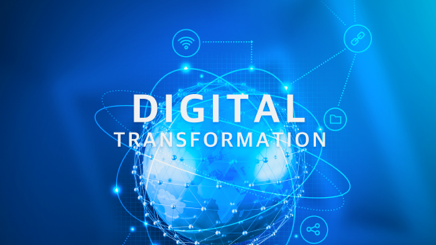

DT College
“小组的Deep Change在我们手中!”
掌握Digital Skill，了解客户和行业，为引领SK Deep Change的成员在
DT College开设的课程。
DT College开设的课程。

DT Biz. &
Implementation
Implementation
- 通过本频道可学习改变客户体验与BM/运营流程的集团内外DT案例与应用方案。
点击各Badge与课程，即可进入到相应页面。